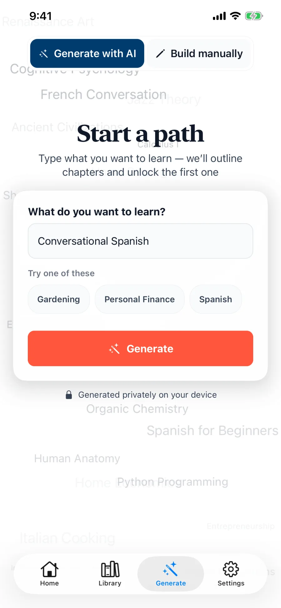
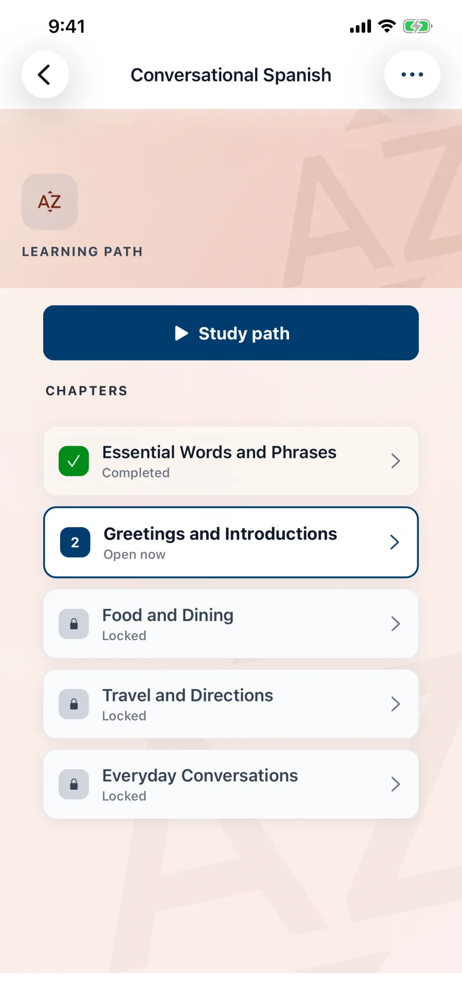
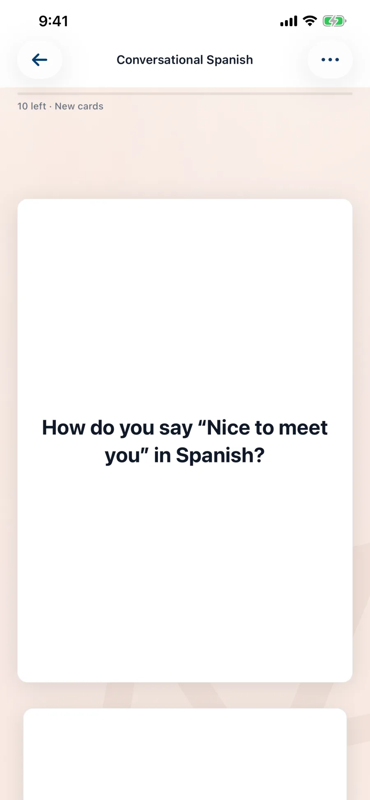
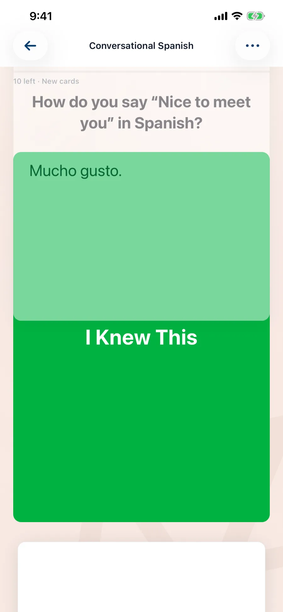
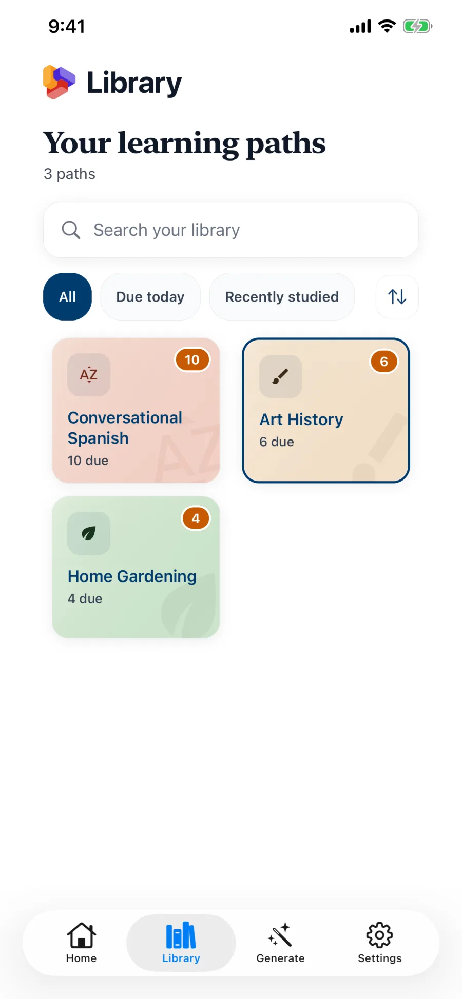

Choose a topic
Type anything you want to understand—from pruning roses to conversational Japanese.
Private learning, built on device
Turn any topic into a focused learning path with on-device AI, thoughtful study cards, and spaced review that keeps you moving.

A simple learning loop
Type anything you want to understand—from pruning roses to conversational Japanese.
Lexidex organizes the subject into focused chapters and prepares your first study cards.
Flip, grade, and revisit cards with a review schedule shaped by what you remember.

Structure without the setup
Start with one useful chapter, then move forward at your pace. Lexidex keeps subjects organized, remembers what’s due, and makes it easy to return without losing the thread.
Revisit cards when they’re ready—not all at once.
Edit, add, or build every chapter and card yourself.
Optional notifications are scheduled locally.
Keep the next session and your streak in sight.
A focused study rhythm
Simple prompts keep attention on the idea in front of you, while your library keeps every path and due review easy to find.



Private by design
Your topics, cards, study history, and preferences live on your device. Lexidex doesn’t need an account, doesn’t run ads, and doesn’t send your learning to a Lexidex server.
Read the privacy policyApple Intelligence creates paths privately on compatible devices.
Open the app and start learning. No profile or login required.
No behavioral tracking, advertising SDKs, or personal data collection.
Your library and progress remain in the app database on your device.
Simple pricing
Lexidex for iPhone & iPad
The first 3 chapters of your first generated learning path, one free replacement path, and unlimited manual paths. Full Access is a one-time $9.99 purchase · no subscription, and unlocks every chapter, unlimited AI paths, and path extensions.
Available now on the App Store.
Get LexidexAI-assisted generation requires a compatible device with Apple Intelligence enabled. Manual creation remains available without AI.
Questions
No. Lexidex has no account or sign-in system.
Yes. You can build learning paths, chapters, and study cards manually. AI-assisted generation requires a compatible device.
No. This version stores learning data locally and does not provide cloud backup or device-to-device sync.
Deleting the app deletes the learning data stored in its local database.